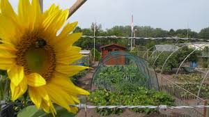

NIEUWS
Nieuws Rubriek
Het laatste nieuws van onze volkstuin. Onze actuele agenda en de laatste nieuwsbrieven. Wij zijn aangesloten bij de OVAT, de Overkoepelende Vereniging van Amateurtuinverenigingen Tilburg. Hier vindt u dan ook de meeste informatie over de OVAT en links daar naar toe.
AGENDA / PLANNING 2025
Op dit moment staat er niets op de agenda.
NIEUWS & DOCUMENTEN
INFORMATIE

Informatie Rubriek
Hier vindt u de meest relevante informatie over onze tuin voor de leden van onze vereniging.
KOSTEN LIDMAATSCHAP
| Lidmaatschap / jaar | € 34,00 |
| Donateurschap / jaar | € 24,00 |
| Inschrijving (wachtlijst) | € 20,00 |
| Verlenging (wachtlijst) / jaar | € 5,00 |
OPENINGSTIJDEN
| zomertijd | 06:00 - 22:30 |
| wintertijd | 06:00 - 19:00 |
De grote poort is alleen te gebruiken op woensdag en zaterdag van 08:00 tot 17:00.
REGELS EN VOORZIENINGEN
WATER
De watertappunten zijn beschikbaar van 1 april tot aanvang vorst. Niet toegestaan zijn:
- Wasactiviteiten;
- Het aansluiten van een tuinslang op het tappunt;
- Het vullen van een vijver.
WISSELTEELT
Wij adviseren onze leden om wisselteelt toe te passen in drie tot vier (voorkeur) vakken. Voor het telen van aardappelen adviseren wij de tuin in te delen in vier vakken, volgens dit schema:
| kerkhof zijde | |||
|---|---|---|---|
| 2021 | 2022 | 2023 | 2024 |
| 2025 | 2026 | 2027 | 2028 |
ELEKTRICITEIT
Voor iedere tuin is er een eigen elektriciteitspunt met teller aanwezig. Er wordt alleen stroom geleverd tijdens de openingsuren van het tuincomplex. Het maximaal vermogen per aansluiting is 1250 watt. Aan te sluiten apparaten mogen niet zwaarder zijn dan 1000 watt. Het gebruik van aggregaten op de volkstuin is niet toegestaan.
COLLECTIEVE VERZEKERING
Wij hebben een collectieve verzekering voor de opstallen van onze leden. Deelname is op vrijwillige basis. Klik het logo voor informatie en kosten.
risico-en verzekeringsadviseursWINKEL VTHOFLAAN
In de winkel kunnen onze leden het hele jaar door meststoffen e.d. kopen. Wij verzorgen bestellingen van zaden, pootaardappelen en tuinmaterialen.
FOTO IMPRESSIE

CONTACT
Contact Informatie
Dillepad 8, 5044EN Tilburg
Tel: 06 39751851
Mail: info@vthoflaan.nl
KvK: 40258380
BESTUUR VOLKSTUIN
Voorzitter
Joop Bergmans
Secretaris
Jan Jansen
Penningmeester
Piet Pietersen
Lid 1
Naam Lid 1
Lid 2
Naam Lid 2
Lid 3
Naam Lid 3
Lid 4
Naam Lid 4